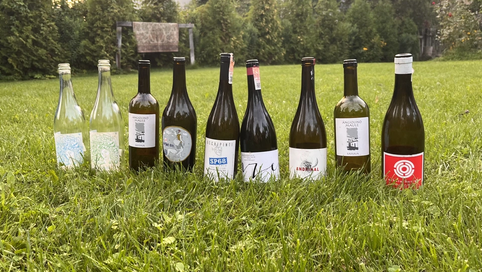

Yearly events report - Vol. 2022

This year was tough. The whole country went into turmoil due to the war. And yet, despite the odds and horrors, we looked for the light of each other. We looked for comfort and company. Just before Independence Day, when there was a high chance of terrorist attacks, someone said to me: it’s better to gather for a wine-tasting event and spend this evening together instead of stressing alone. And so we did.
You might already be aware that I like to collect data. Every wine that we tasted over 15 events was served blind. Every participant had a chance to rate the wine on a 1-5 scale. And so every event has a dedicated article containing our scores and sharing more information about wines and producers. This post aggregates data from all events of this year. Of course, in a dry fashion. So do not expect any poetry here. Only dry numbers and charts.
- [2022-01-11] Some Amber Stars
- [2022-01-25] U600
- [2022-06-21] A taste of Chenin Blanc
- [2022-07-05] Mixed Bag Vol. 1
- [2022-07-28] Mixed Bag Vol. 2: Orange
- [2022-08-23] Sin Titulo
- [2022-09-06] Wine o’clock with People
- [2022-09-13] Mixed Bag Vol. 3
- [2022-09-20] Opaque Tasting Vol. 1
- [2022-09-27] Mixed Bag Vol. 4
- [2022-10-18] Atypical ver.1.22474487139…
- [2022-10-25] A bit of Spain
- [2022-12-05] Grapes of Piedmont
- [2022-12-13] To Each Their Own Vol. 1
- [2022-12-27] Classy Bubbles Vol. 2
Participants
This year we’ve got a lot of new faces. Some regulars, unfortunately, moved out of Kyiv and could not participate as much as they used to. In total, we had 147 participants (vs 109 last year) and 43 unique (vs 38 last year). And by the way, if I am not mistaken, 7 people received small presents from me for guessing wines.
Most active participants
Some people participate more often than others. Around 40% of people (excluding me, of course) participated in 3+ events (e.g. at least in every fifth event). That makes a fine core for our events, right?
Relation to Wix
It’s not a secret that most events are held in the Wix Kyiv office. And it explains why most of the participants are Wix employees. Yet this year, more and more people out of the Wix joined our cosy parties. One person got so used to our office that eventually decided to join Wix.
Events
As was already mentioned, we had 15 events this year (vs 11 last year). Out of them, 3 were hosted outside our regular place (e.g. Wix Kyiv office) - Garage, 101 Bar and One Tea Tree. In addition, we experimented with the tasting format. During one of the events, we tasted wine from black opaque glasses (see Opaque Tasting Vol. 1), and during another, each participant had to bring a bottle (see To Each Their Own Vol. 1). Both of the formats are great, so I am going to continue organising them.
Average score per event
As you can see, there was a pretty tough fight in terms of the average score. There is a clear winner - Some Amber Stars (in general, orange wines are scored higher by us), but many events differ only in 0.01. Crazy!
I am also amazed Classy Bubbles Vol. 2 reached second place. After all, last year’s events dedicated to sparkling wines are among the worst three events. It is lovely to see this transformation.
Participants per event
It’s always nice to see more people, but I found that 6-9 is the ideal amount participants. Why? Because we have more time and space to hear everyone’s opinion without rushing. This became more critical due to the curfew. The drawback is that the budget becomes tighter.
Wines per event
We constantly say that 6-7 is the ideal amount of wines per event, but somehow we end up with 8 wines from time to time. And this is ignoring the ‘extra’ bottles. Once, we ended up with 13 wines! At least it was fun.
Finances
Total wine price per event
This year we got bolder with our budget. We spent 118 656 UAH on wines (vs 72 712 UAH last year). If we consider the exchange ratio, the growth is not that big. There is little wonder that the Classy Bubbles Vol. 2 event was the most expensive. At the same time, U600 and Wine o’clock with People were designed to be the least expensive. You can find wines for almost any budget.
Average wine price per event
The average price of wines per event correlates with the previous chart. Mostly. Honestly, I don’t really understand what conclusion to draw from this one, but it’s cool, so take a look.
Most expensive wines
The average price of the bottle is 1186 UAH (vs 908 UAH last year). The most expensive wine was Gravner Ribolla Anfora 2004 until the last event, where I decided to put a few beefed Champagne wines. So De Sousa Cuvée des Caudalies Grand Cru Rosé NV is the most expensive wine with a price tag of 3906 UAH (vs Agrapart Terroirs NV last year with a price tag of 1950 UAH). And Félicien Brou Vouvray Brut NV is the least expensive wine with a price tag of 339 UAH.
Wines
So this year, we tasted 100 wines (vs 80 last year). And only 2 of them were repeated - Kmetija Štekar Rebula Prilo 2015 and Cà del Vént Anima Brut Rosé Pas Operé VSQ 2014.
Best wines of the year
Now to the list of the most rated wines. It’s no wonder that half of the top 20 wines are macerated white (aka orange) wines. We all love them. But I am happy to see Patrick Sullivan, De Sousa, and Cascina Tavijn on this list.
By the way, did you guess what wine is the best-rated wine of this year? Now I am just happy that I decided to share R. López de Heredia Viña Tondonia Blanco Reserva 2011 with you.
Worst wines of the year
Someone would say that this list is a little bit depressing. But I would argue because even this list contains mostly good scores (with one notable exception). Besides, some wines are just controversial (Sous Le Végétal Palli et Genesia 2018 is an excellent example). It slightly pains me to see Tsikhelishvili, Sadie Family, Sous Le Végétal and Fedellos do Couto on this list. But on the other hand, someone needs to be here, right?
Wines with best QPR
The most interesting chart. Since quality is not linear (e.g. wine for 100 UAH that received 1.5 is not something I want to buy), it’s calculated as $100 * \frac{Q!}{P}$. We multiply by 100 just to make it more representative. The more the better! Factorial gives the most value to scores close to 5. The formula is not ideal, and if someone knows how to better approach this, let me know!
Aside from Félicien Brou Vouvray Brut NV with its ridicuously great price tag, I am happy to see R. López de Heredia Viña Tondonia Blanco Reserva 2011 on this list. It’s truly fascinating when the best-rated wine has good QPR at the same time. Something to hunt for.
Countries
This year we visited 19 countries (vs 14 last year). Now some of us can flex after tasting wine from Croatia or England.
Grapes
And this is the chart that makes me proud. We tasted 74 grapes (ignoring the 417 variety field blend and smaller field blends) compared to 42 last year. Moreover, only because of the last event, Pinot Noir and Chardonnay are at the top again. I assure you, not many sommeliers tasted all these grapes. For example, Jgia is almost extinct. La Crescent is a rare grape created for the cold climate of the northern parts of the Americas. Pelaverga Piccolo? Refošk? Robola? Ortugo? Folks, we are lucky.
Carbonation
Nothing overly interesting. Just know that 20% of wines this year were sparkling.
Colour
Considering that orange wines are macerated whites, it seems like we tasted not so many red wines. On the other hand, I decided to track orange wines separately to check if they are better received than others. Guess what? Yes, I already spoiled it, but orange wines have an average score of 4.027 compared to others (ranging between 3.79 and 3.84).
Vintage
This year we had some older bottles. The oldest was La Biancara Sassaia 1997 (vs Chivite Coleccion 125 Rosado 2006 last year). We also had Maurice Vesselle Grand Cru Collection Bouzy 2000 and Gravner Ribolla Anfora 2004. Lucky us, right?
All wines
| date | event | producer | wine | vintage | colour | carbonation | country | grapes | price | amean | rms | QPR |
|---|---|---|---|---|---|---|---|---|---|---|---|---|
| 2022.01.11 | Some Amber Stars | Cantina Alchemica | Lanthano Bianco | 2013 | orange | still | Italy | Field Blend | 1890 | 4.21 | 4.22 | 1.7537 |
| 2022.01.11 | Some Amber Stars | Kmetija Štekar | Rebula Prilo | 2015 | orange | still | Slovenia | Ribolla Gialla | 1050 | 4.17 | 4.17 | 2.9468 |
| 2022.01.11 | Some Amber Stars | La Stoppa | Ageno | 2015 | orange | still | Italy | Malvasia di Candia Aromatica, Ortrugo, Trebbiano | 1090 | 4.24 | 4.27 | 3.2026 |
| 2022.01.11 | Some Amber Stars | Radikon | Ribolla | 2007 | orange | still | Italy | Ribolla Gialla | 1690 | 4.22 | 4.23 | 1.9953 |
| 2022.01.11 | Some Amber Stars | Gravner | Ribolla Anfora | 2004 | orange | still | Italy | Ribolla Gialla | 2900 | 4.06 | 4.1 | 0.9001 |
| 2022.01.25 | U600 | Naveran | Odisea | 2019 | white | sparkling | Spain | Chardonnay | 477 | 3.79 | 3.82 | 3.6794 |
| 2022.01.25 | U600 | Weingut Tement | Blanc Reserve | 2017 | white | still | Austria | Sauvignon Blanc, Welschriesling, Weissburgunder | 542 | 3.33 | 3.37 | 1.7086 |
| 2022.01.25 | U600 | Golan Heights Winery | Chardonnay Yarden | 2019 | white | still | Israel | Chardonnay | 559 | 3.58 | 3.61 | 2.3199 |
| 2022.01.25 | U600 | Thymiopoulos | Xinomavro Young Vines | 2018 | red | still | Greece | Xinomavro | 407 | 3.87 | 3.87 | 4.8336 |
| 2022.01.25 | U600 | Weinert | Cabernet Sauvignon | 2010 | red | still | Argentina | Cabernet Sauvignon | 565 | 3.82 | 3.84 | 3.2615 |
| 2022.01.25 | U600 | Bodegas Borsao | Tres Picos | 2019 | red | still | Spain | Grenache | 585 | 4.06 | 4.07 | 4.4621 |
| 2022.06.21 | A taste of Chenin Blanc | Testalonga | El Bandito I wish I was a Ninja | 2021 | white | sparkling | South Africa | Colombardo | 820 | 4.33 | 4.36 | 4.8938 |
| 2022.06.21 | A taste of Chenin Blanc | Les Vignes De Paradis | Chenin | 2019 | white | still | France | Chenin Blanc | 730 | 3.47 | 3.48 | 1.5215 |
| 2022.06.21 | A taste of Chenin Blanc | Domaine de la Taille Aux Loups | Bretonniere Monopole | 2017 | white | still | France | Chenin Blanc | 1490 | 3.98 | 4 | 1.5578 |
| 2022.06.21 | A taste of Chenin Blanc | Sadie Family | Skurfberg | 2020 | white | still | South Africa | Chenin Blanc | 1490 | 3.48 | 3.55 | 0.757 |
| 2022.06.21 | A taste of Chenin Blanc | Costador | Metamorphika Chenin Blanc | 2017 | white | still | Spain | Chenin Blanc | 745 | 2.13 | 2.29 | 0.3047 |
| 2022.06.21 | A taste of Chenin Blanc | Testalonga | El Bandito Skin | 2019 | white | still | South Africa | Chenin Blanc | 1150 | 3.63 | 3.66 | 1.2199 |
| 2022.07.05 | Mixed Bag Vol. 1 | Villa Calicantus | Sollazzo | 2018 | rose | sparkling | Italy | Corvina, Molinara, Rondinella, Sangiovese | 776 | 3.55 | 3.56 | 1.597 |
| 2022.07.05 | Mixed Bag Vol. 1 | Patrick Sullivan | Rain Field Blend | 2019 | red | still | Australia | Cabernet Franc, Pinot Gris | 1150 | 3.66 | 3.7 | 1.2737 |
| 2022.07.05 | Mixed Bag Vol. 1 | Domaine du Pélican | Savagnin Ouillé | 2016 | white | still | France | Savagnin | 1591 | 3.74 | 3.77 | 1.0221 |
| 2022.07.05 | Mixed Bag Vol. 1 | Matassa | Cuvée Alexandria | 2019 | orange | still | France | Zibibbo | 1185 | 4.09 | 4.11 | 2.3086 |
| 2022.07.05 | Mixed Bag Vol. 1 | Éric Chevalier | Cirrus | 2018 | orange | still | France | Sauvignon Gris | 1112 | 3.88 | 3.9 | 1.7946 |
| 2022.07.05 | Mixed Bag Vol. 1 | Pheasant’s Tears | Poliphonia | 2019 | red | still | Georgia | 417 variety field blend | 603 | 3.65 | 3.68 | 2.3978 |
| 2022.07.05 | Mixed Bag Vol. 1 | Cascina Bertolotto | Spumante Brut Metodo Classico | NV | white | sparkling | Italy | Pinot Noir, Chardonnay | 825 | 4.04 | 4.06 | 3.0733 |
| 2022.07.28 | Mixed Bag Vol. 2: Orange | Lucy Margaux | Pinot Gris Comme de Fleurs | 2020 | orange | sparkling | Australia | Pinot Gris | 946 | 3.9 | 3.91 | 2.1847 |
| 2022.07.28 | Mixed Bag Vol. 2: Orange | Marco De Bartoli | Integer Grillo | 2018 | orange | still | Italy | Grillo | 1185 | 3.95 | 3.98 | 1.8917 |
| 2022.07.28 | Mixed Bag Vol. 2: Orange | La Biancara | Sassaia | 1997 | orange | still | Italy | Garganega | 1600 | 4.18 | 4.18 | 1.9658 |
| 2022.07.28 | Mixed Bag Vol. 2: Orange | Tsikhelishvili Wines | Alvani Rkatsiteli | 2018 | orange | still | Georgia | Rkatsiteli | 690 | 3.35 | 3.44 | 1.3642 |
| 2022.07.28 | Mixed Bag Vol. 2: Orange | La Stoppa | Ageno | 2018 | orange | still | Italy | Malvasia di Candia Aromatica | 1150 | 4.39 | 4.4 | 3.8225 |
| 2022.07.28 | Mixed Bag Vol. 2: Orange | La Stoppa | Ageno | 2019 | orange | still | Italy | Malvasia di Candia Aromatica | 1150 | 3.72 | 3.74 | 1.3774 |
| 2022.07.28 | Mixed Bag Vol. 2: Orange | Gentle Folk | Summertown blanc | 2019 | orange | still | Australia | Sauvignon Blanc | 1400 | 3.89 | 3.9 | 1.4565 |
| 2022.07.28 | Mixed Bag Vol. 2: Orange | Ktima Ligas | Spira | 2019 | white | still | Greece | Xinomavro | 1290 | 4.38 | 4.39 | 3.3491 |
| 2022.08.23 | Sin Titulo | Anne et J.F. Ganevat | La Bubulle à Jeannot | NV | rose | sparkling | France | Gamay, Poulsard | 955 | 3.74 | 3.76 | 1.7159 |
| 2022.08.23 | Sin Titulo | Villa Calicantus | Chiar’otto Bardolino Classico Chiaretto | 2019 | rose | still | Italy | Corvina, Rondinella, Molinara, Sangiovese | 702 | 3.47 | 3.49 | 1.5822 |
| 2022.08.23 | Sin Titulo | An Approach To Relaxation | Sucette | 2018 | red | still | Australia | Grenache | 1529 | 3.77 | 3.82 | 1.1249 |
| 2022.08.23 | Sin Titulo | Matassa | Tattouine Rouge | 2020 | red | still | France | Grenache Gris | 1092 | 3.85 | 3.86 | 2.01 |
| 2022.08.23 | Sin Titulo | Victoria E. Torres Pecis | Sin Titulo NG | 2017 | red | still | Spain | Negramoll | 997 | 3.66 | 3.69 | 1.4581 |
| 2022.08.23 | Sin Titulo | Jauma | Audrey | 2018 | red | still | Australia | Syrah | 787 | 3.81 | 3.83 | 2.2539 |
| 2022.08.23 | Sin Titulo | Cà del Vént | Anima Brut Rosé Pas Operé VSQ | 2014 | rose | sparkling | Italy | Pinot Noir | 1477 | 4.15 | 4.16 | 2.0418 |
| 2022.08.23 | Sin Titulo | Alex Craighead | Kindeli Verano | 2020 | rose | still | New Zealand | Riesling, Syrah, Sauvignon Blanc, Chardonnay, Gewürztraminer, Pinot Gris, Pinot Noir | 802 | 3.84 | 3.85 | 2.3906 |
| 2022.09.06 | Wine o’clock with People | Casa Coste Piane | Brichet Frizzante | NV | white | sparkling | Italy | Glera | 653 | 2.88 | 2.95 | 0.7871 |
| 2022.09.06 | Wine o’clock with People | Cume do Avia | Arraiano Tinto | 2019 | red | still | Spain | Treixadura, Godello, Torrontes | 616 | 3.69 | 3.76 | 2.4542 |
| 2022.09.06 | Wine o’clock with People | Fedellos do Couto | Lomba dos Ares | 2017 | red | still | Spain | Mencia, Mouraton, Garnacha Tintorera, Caiño, Trousseau | 676 | 3.81 | 3.84 | 2.6874 |
| 2022.09.06 | Wine o’clock with People | Hummel | Villányi Portugieser | 2020 | red | still | Hungary | Blauer Portugieser | 462 | 3.51 | 3.53 | 2.5618 |
| 2022.09.06 | Wine o’clock with People | Pierre Frick | Cremant d’Alsace | 2017 | white | sparkling | France | Pinot Blanc, Pinot Gris | 754 | 3.52 | 3.62 | 1.5973 |
| 2022.09.13 | Mixed Bag Vol. 3 | Lyme Bay | Bacchus Block | 2018 | white | still | England | Bacchus | 819 | 3.7 | 3.73 | 1.8842 |
| 2022.09.13 | Mixed Bag Vol. 3 | Marco De Bartoli | Vignaverde | 2019 | white | still | Italy | Grillo | 630 | 3.78 | 3.8 | 2.7634 |
| 2022.09.13 | Mixed Bag Vol. 3 | Rodrigo Méndez | Sálvora | 2017 | white | still | Spain | Albariño | 1163 | 3.92 | 3.93 | 1.8216 |
| 2022.09.13 | Mixed Bag Vol. 3 | Ca’ di Mat | Fuente de los Huertos | 2017 | red | still | Spain | Grenache | 1034 | 3.71 | 3.72 | 1.5104 |
| 2022.09.13 | Mixed Bag Vol. 3 | Clos du Tue-Boeuf | Rouillon Cheverny | 2020 | red | still | France | Pinot Noir, Gamay | 820 | 3.99 | 4.01 | 2.8903 |
| 2022.09.13 | Mixed Bag Vol. 3 | Tomislav Marković | Parabole | 2018 | red | still | Germany | Pinot Noir | 1682 | 4.1 | 4.11 | 1.6606 |
| 2022.09.13 | Mixed Bag Vol. 3 | Foradori | Fuoripista Pinot Grigio | 2014 | orange | still | Italy | Pinot Gris | 1627 | 4.16 | 4.16 | 1.8775 |
| 2022.09.13 | Mixed Bag Vol. 3 | Kmetija Štekar | Rebula Prilo | 2015 | orange | still | Slovenia | Ribolla Gialla | 1081 | 4.1 | 4.11 | 2.5839 |
| 2022.09.20 | Opaque Tasting Vol. 1 | Domaine Rossignol-Trapet | Savigny-Les-Beaune Les Bas Liards | 2019 | red | still | France | Pinot Noir | 976 | 3.92 | 3.93 | 2.1887 |
| 2022.09.20 | Opaque Tasting Vol. 1 | Bret Brothers | Pouilly-Loché Climat La Colonge | 2018 | white | still | France | Chardonnay | 1070 | 3.77 | 3.78 | 1.5881 |
| 2022.09.20 | Opaque Tasting Vol. 1 | Testalonga | Baby Bandito Follow Your Dreams | 2021 | red | still | South Africa | Cariñena | 640 | 3.89 | 3.89 | 3.17 |
| 2022.09.20 | Opaque Tasting Vol. 1 | Le Vieux Télégraphe | Châteauneuf du Pape Clos La Roquète | 2020 | white | still | France | Garnacha Blanca, Clairette, Roussanne | 1282 | 4.12 | 4.13 | 2.2638 |
| 2022.09.20 | Opaque Tasting Vol. 1 | Pierre Frick | Pinoit Gris Macération Pur Vin | 2019 | orange | still | France | Pinot Gris | 898 | 3.92 | 3.92 | 2.3592 |
| 2022.09.27 | Mixed Bag Vol. 4 | Costadilà | Mòz | NV | orange | sparkling | Italy | Moscato Giallo, Glera | 670 | 3.78 | 3.79 | 2.5858 |
| 2022.09.27 | Mixed Bag Vol. 4 | Tomislav Marković | Quo Vadis | 2019 | white | still | Germany | Riesling | 930 | 4.25 | 4.26 | 3.7862 |
| 2022.09.27 | Mixed Bag Vol. 4 | Sous Le Végétal | Palli et Genesia | 2018 | white | still | Greece | Muscat de Samos | 1018 | 3.23 | 3.29 | 0.7926 |
| 2022.09.27 | Mixed Bag Vol. 4 | Patrick Sullivan | Baw Baw Shire Ada River Chardonnay | 2018 | white | still | Australia | Chardonnay | 1620 | 4.17 | 4.18 | 1.9198 |
| 2022.09.27 | Mixed Bag Vol. 4 | Fedellos do Couto | Bastarda | 2017 | red | still | Spain | Trousseau | 1024 | 3.63 | 3.64 | 1.3635 |
| 2022.09.27 | Mixed Bag Vol. 4 | Jean Grivot | Bourgougne Pinot Noir | 2017 | red | still | France | Pinot Noir | 1282 | 3.85 | 3.85 | 1.4973 |
| 2022.09.27 | Mixed Bag Vol. 4 | Vino di Anna | Qvevri ‘Don Alfio’ | 2016 | red | still | Italy | Nerello Mascalese, Alicante Henri Bouschet, Nerello Cappuccio | 1190 | 3.68 | 3.72 | 1.2601 |
| 2022.10.18 | Atypical ver.1.22474487139… | Rita & Rudolf Trossen | Purellus Riesling Pyramide Pet Nat | 2018 | white | sparkling | Germany | Riesling | 1150 | 3.71 | 3.74 | 1.3697 |
| 2022.10.18 | Atypical ver.1.22474487139… | La Garagista | Vinu Jancu Reserve | 2017 | white | still | USA | La Crescent | 1750 | 4.01 | 4.02 | 1.4013 |
| 2022.10.18 | Atypical ver.1.22474487139… | Pol Opuesto | Mala Hierba Nunca Muere | 2017 | red | still | Argentina | Corbeau | 980 | 3.77 | 3.78 | 1.7459 |
| 2022.10.18 | Atypical ver.1.22474487139… | Sclavus | Vino di Sasso | 2017 | white | still | Greece | Robola | 920 | 3.61 | 3.62 | 1.4842 |
| 2022.10.18 | Atypical ver.1.22474487139… | Tsikhelishvili Wines | Jgia | 2018 | red | still | Georgia | Jgia | 818 | 3.53 | 3.54 | 1.4797 |
| 2022.10.18 | Atypical ver.1.22474487139… | Piquentum | Refošk Vrh | 2018 | red | still | Croatia | Refošk | 1400 | 3.99 | 3.99 | 1.6778 |
| 2022.10.25 | A bit of Spain | Loxarel | Refugi Brut Nature Reserva | 2018 | white | sparkling | Spain | Xarel-lo | 830 | 3.57 | 3.59 | 1.5382 |
| 2022.10.25 | A bit of Spain | Muchada-Léclapart | Univers | 2017 | white | still | Spain | Palomino Fino | 1141 | 3.36 | 3.37 | 0.8371 |
| 2022.10.25 | A bit of Spain | Avancia | Godello | 2020 | white | still | Spain | Godello | 1013 | 4.22 | 4.23 | 3.3288 |
| 2022.10.25 | A bit of Spain | R. López de Heredia | Viña Tondonia Blanco Reserva | 2011 | white | still | Spain | Macabeo, Malvasia di Candia Aromatica | 1567 | 4.59 | 4.59 | 3.8576 |
| 2022.10.25 | A bit of Spain | Daniel Gómez Jiménez-Landi | Las Uvas de la Ira | 2018 | red | still | Spain | Grenache | 1053 | 3.79 | 3.8 | 1.6668 |
| 2022.10.25 | A bit of Spain | Portal del Priorat | Tros De Clos | 2013 | red | still | Spain | Cariñena | 2465 | 4.12 | 4.14 | 1.1624 |
| 2022.10.25 | A bit of Spain | Vega Sicilia | Pintia | 2016 | red | still | Spain | Tempranillo | 1947 | 3.84 | 3.85 | 0.9779 |
| 2022.12.05 | Grapes of Piedmont | Cascina Tavijn | Vino Bianca | 2021 | orange | still | Italy | Chardonnay, Cortese, Zibibbo | 545 | 3.79 | 3.84 | 3.2334 |
| 2022.12.05 | Grapes of Piedmont | Iuli | La Rina | 2018 | red | still | Italy | Cellerina | 850 | 3.6 | 3.65 | 1.5743 |
| 2022.12.05 | Grapes of Piedmont | Fratelli Alessandria | Speziale Verduno Pelaverga | 2019 | red | still | Italy | Pelaverga Piccolo | 730 | 3.83 | 3.83 | 2.5346 |
| 2022.12.05 | Grapes of Piedmont | Antoniolo | Gattinara | 2014 | red | still | Italy | Nebbiolo | 1800 | 4.06 | 4.07 | 1.4563 |
| 2022.12.05 | Grapes of Piedmont | Valli Unite | Marmote | 2017 | red | still | Italy | Croatina | 1200 | 3.9 | 3.91 | 1.7223 |
| 2022.12.05 | Grapes of Piedmont | Cascina Degli Ulivi | Nibiô | 2010 | red | still | Italy | Dolcetto | 1490 | 4.04 | 4.08 | 1.7154 |
| 2022.12.05 | Grapes of Piedmont | Cascina Tavijn | Bandita | 2016 | red | still | Italy | Barbera | 1000 | 4.23 | 4.24 | 3.4309 |
| 2022.12.13 | To Each Their Own Vol. 1 | Louis Jadot | Savigny-Lés-Beaune La Dominode 1er Cru | 2014 | red | still | France | Pinot Noir | 1510 | 3.63 | 3.64 | 0.9228 |
| 2022.12.13 | To Each Their Own Vol. 1 | Vinoman | Pinot Blanc | 2021 | white | still | Ukraine | Pinot Blanc | 600 | 3.5 | 3.51 | 1.9386 |
| 2022.12.13 | To Each Their Own Vol. 1 | Foradori | Fuoripista Pinot Grigio | 2021 | orange | still | Italy | Pinot Gris | 1402 | 4.17 | 4.17 | 2.2233 |
| 2022.12.13 | To Each Their Own Vol. 1 | Domaine Zind Humbrecht | Heimbourg Turckheim Pinot Gris | 2018 | white | still | France | Pinot Gris | 1576 | 3.84 | 3.85 | 1.2052 |
| 2022.12.13 | To Each Their Own Vol. 1 | Rudolf Fürst | Klingenberger Spätburgunder | 2019 | red | still | Germany | Pinot Noir | 1793 | 3.97 | 3.98 | 1.2823 |
| 2022.12.13 | To Each Their Own Vol. 1 | Tomislav Marković | On the Rocks | 2020 | red | still | Germany | Pinot Noir | 1590 | 3.79 | 3.8 | 1.0987 |
| 2022.12.13 | To Each Their Own Vol. 1 | Momento Mori | Cardinia Rangers Rosé | 2019 | rose | still | Australia | Pinot Noir | 1358 | 3.71 | 3.73 | 1.1599 |
| 2022.12.27 | Classy Bubbles Vol. 2 | Filipa Pato | 3B Blanc de Blancs Extra Bruto Unfiltered | NV | white | sparkling | Portugal | Bical, Cercial, Maria Gomes | 651 | 3.78 | 3.79 | 2.6684 |
| 2022.12.27 | Classy Bubbles Vol. 2 | Weingut Bründlmayer | Blanc de Blancs Extra Brut Reserve | NV | white | sparkling | Austria | Chardonnay | 1627 | 3.79 | 3.79 | 1.0819 |
| 2022.12.27 | Classy Bubbles Vol. 2 | Benoît Lahaye | Millesime | 2017 | white | sparkling | France | Chardonnay, Pinot Noir | 2595 | 4.08 | 4.1 | 1.0469 |
| 2022.12.27 | Classy Bubbles Vol. 2 | Bérêche & Fils | Brut Réserve | NV | white | sparkling | France | Chardonnay | 1906 | 4.07 | 4.08 | 1.4058 |
| 2022.12.27 | Classy Bubbles Vol. 2 | Félicien Brou | Vouvray Brut | NV | white | sparkling | France | Chenin Blanc | 339 | 4.02 | 4.02 | 7.2765 |
| 2022.12.27 | Classy Bubbles Vol. 2 | Maurice Vesselle | Grand Cru Collection Bouzy | 2000 | white | sparkling | France | Chardonnay, Pinot Noir | 3673 | 4.02 | 4.02 | 0.6716 |
| 2022.12.27 | Classy Bubbles Vol. 2 | De Sousa | Cuvée des Caudalies Grand Cru Rosé | NV | rose | sparkling | France | Chardonnay, Pinot Noir | 3906 | 4.13 | 4.13 | 0.7456 |
| 2022.12.27 | Classy Bubbles Vol. 2 | Cà del Vént | Anima Brut Rosé Pas Operé VSQ | 2014 | rose | sparkling | Italy | Pinot Noir | 1690 | 4.11 | 4.11 | 1.6759 |
Conclusion
Aside from being active this year, we tasted many different wines, styles, regions and grapes. And while we didn’t try all the planned formats, we still managed to add some diversity here. We also tried gathering in new places. Count me happy.
Acknowledgements
First and foremost, I am grateful to all participants. Without you, this endeavour would not be possible at all. You are brave enough to sign up for tasting events without even knowing what I am going to bring (this actually gives me enough freedom to adapt for specific participants to bring something personalised). I enjoy our little journey in the world of wine. Thank you!
I am grateful to Elvira K. Aside from being the most active participant (two years in a row, by the way), she also helps me with topic selection and event organisation. She inspires me to continue. I know it’s not always easy to drink so much, but at least it’s fun.
Last but not the least. I am grateful to people (and ‘companies’) helping me without being participants: Ivan Omelchenko, Maksym Demchenko, Mykola Chobanu, People from 101 Bar, People from Garage, People from One Tea Tree, People from Roots and Vasyl Kalinichenko.
What’s next?
More events, obviously. Just stay tuned! And safe travels!